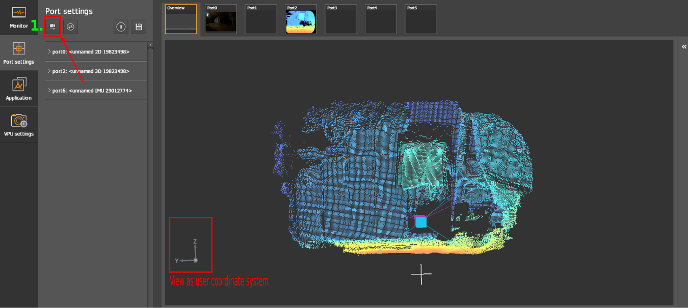
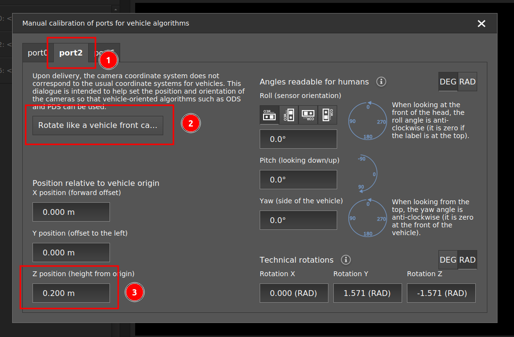
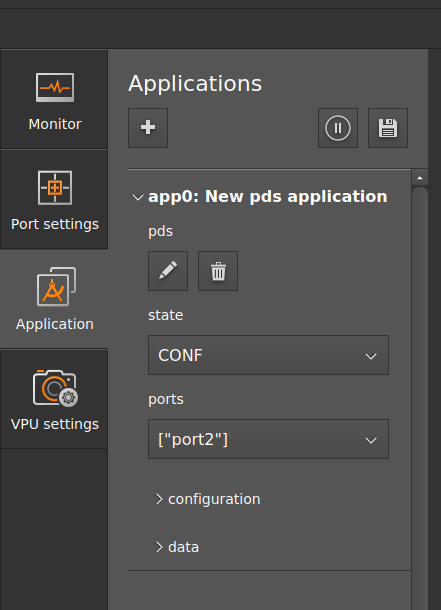
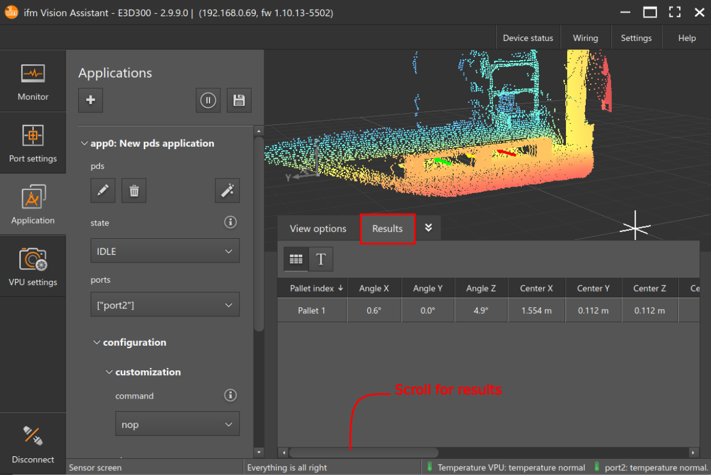

Getting started with PDS
Prerequisites
It is expected that a running O3R system (VPU and camera heads) is connected. Please refer to the unboxing section.
A typical procedure for getting started would be as follows:
Connect the VPU (OVP812 or OVP813) to the O3R camera head,
Connect the Ethernet cable to the VPU and the laptop,
Connect the VPU to the power supply and power up the system,
Start the ifmVisionAssistant (iVA) GUI,
Verify that live images are being received.
Before reading this section, make sure you are familiar with how to get started with the iVA.
Calibrate the camera
The standard O3R coordinate system is right-handed, with:
X-axis pointing in the opposite direction to the camera connector,
Y-axis pointing down,
Z-axis pointing away from the camera (depth).
For PDS, this coordinate system is rotated to match the typical fork coordinate system orientation. The coordinate system is fixed to the fork tines so that the coordinate system origin moves with the forks:
X-axis pointing in the direction of the forks,
Y-axis pointing to the left, and
Z-axis pointing up.
To calibrate the cameras, the easiest way is to use the ifmVisionAssistant manual calibration wizard (available for iVA >= 2.7.6): 
Select the port to calibrate 
Click on the “Rotate like a vehicle front camera.” This button is a shortcut to place the camera horizontally and facing in the X direction, in the reference coordinate system. If the camera placement is different, the angles should be adjusted on the right hand side of the calibration wizard.
Enter the translation parameters from the fork tines coordinate system to the camera.
Note
For more details on the calibration process, you can refer to the calibration documentation. For a quick test setup, it is acceptable to have an approximate calibration, as long as the orientation of the camera is correct and the translations are precise within approximately one centimeter. For a production setup and for testing the performance algorithm, we recommend to precisely calibrate the camera with one of ifm’s provided calibration methods.
PDS with ifmVisionAssistant
Extrinsic calibration is a necessary step before creating a PDS application. Follow the instructions above to calibrate the cameras manually.
To create a PDS application instance, click on the `Application’ window and click on + to create a new application.
Select the port in the
Portssection which shall be used by PDS application. Only one port can be selected.Change the state of the application from
CONFtoIDLEorRUN. InIDLEmode, the camera can be triggered upon request to collect a frame at a specific time. InRUNmode, the camera is continuously streaming PDS data.
Commands:
In PDS, only one command can be executed at a time. The command will be blocking the operation until it is fully performed and the result information stream is triggered.
The default command (parameter) is
nop(“no operation”).The user has to customize the desired PDS command parameters before the next command execution. For more details see the specific commands documentation.
Trigger the command under the
/configuration/customization/commandsection.After processing a command, the system returns to its default command value -
nopand is ready for the next command.In
RUNmode, data corresponding to the command configured in/configuration/customization/commandwill be streamed, until a change in the configuration is set.
View results in the display.

PDS with the ifm3d API
We recommend to get started using the ifmVisionAssistant, since it provides convenient visualization features which are very useful in the first testing steps. However, it is also possible to use PDS with the Python or C++ ifm3d API only. Complete examples are available in the ifm3d-examples repository, but the main steps are as follows:
Extrinsically calibrate the cameras, by directly providing the calibration values in JSON format and setting the configuration with the
setfunction.Create a PDS application using the
setfunction. Providing the"class": "pds"JSON key will create an application where all parameters have their default values.Verify that the port used by the application is correct. If not, change it in
"ports": [CAMERA_PORT].Change the state of the application from
CONFtoIDLEorRUN. InIDLEmode, the camera can be triggered upon request to collect a frame at a specific time. InRUNmode, the camera is continuously streaming data.Commands:
In PDS, only one command can be executed at a time. The command will be blocking the operation until it is fully performed and the result information stream is triggered.
The default command (parameter) is
nop(“no operation”).The user has to customize the desired PDS command parameters before the next command execution. For more details see the specific commands documentation.
Trigger the command under the
/configuration/customization/commandsection. Each command corresponds to its own respective JSON parameter in the application’s JSON. To trigger it, the parameter needs to be changed to a command value via thesetcommand.After processing a command, the system returns to its default command value -
nopand is ready for the next command.In
RUNmode, data corresponding to the command configured in/configuration/customization/commandwill be streamed, until a change in the configuration is set.
View results via the respective
buffer_id. See the Python and C++ programming examples for more details.
Note
It is possible to use both the API and the GUI together. For example, steps 1-3 are easily done on the GUI, and the triggering can be done with the API.